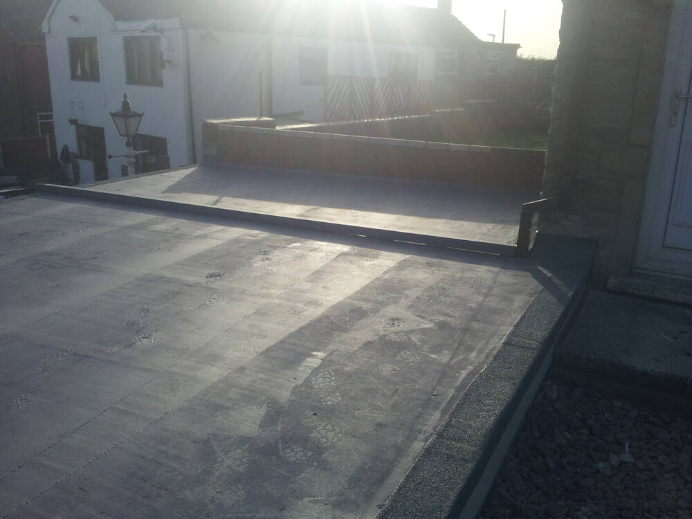

Darfield Garage
TypeBuilding
Photos10
AreaBarnsley & South Yorkshire

About the project
Depicts old metal roof with numerous holes. Customer needed a dry garage and storage space and opted for replacement roof. Customer viewed various options and styles of replacement roof’s before opting for a flat roof.
Completion of roof using a tyvek supro breathable roof underlay torch on felt system , with a green mineral edging (other types of flat and pitched roof systems are available). We also fitted a white u.p.v.c fascia board and gutter to the garage